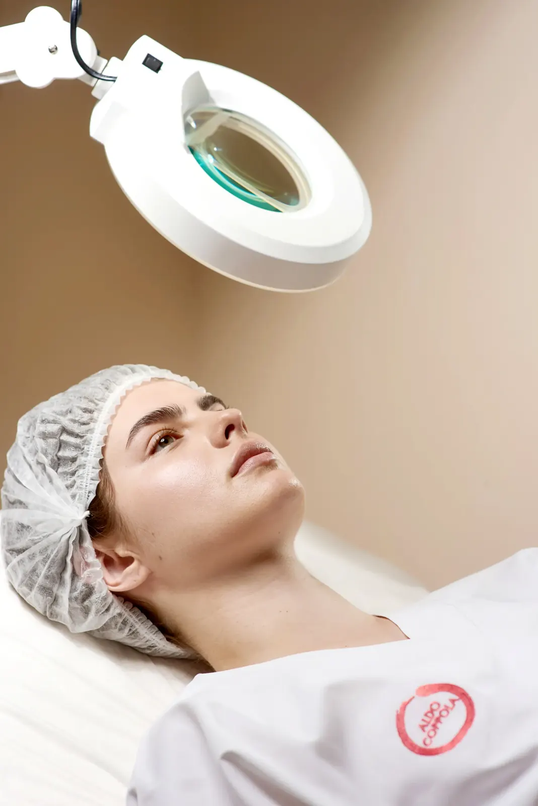

Все три процедуры — инъекционные и работают на качество кожи: увлажнение, плотность, сияние. Отличаются они тем, что именно врач вводит в кожу. От этого зависят показания, ощущения и то, как быстро виден эффект.
Биоревитализация: увлажнение изнутри
Врач вводит в кожу препарат на основе гиалуроновой кислоты. Она удерживает воду и помогает коже восстанавливать собственные ресурсы. Чаще всего процедуру выбирают при обезвоженной, тусклой, потерявшей упругость коже, а также после солнца, перелётов и в отопительный сезон.
После уколов на коже могут оставаться небольшие папулы, они обычно проходят за несколько дней. Поэтому перед важным событием биоревитализацию делают заранее. В центрах Aldo Coppola — от 7 100 ₽.

Мезотерапия: коктейль под задачу
В мезотерапии используют коктейли: витамины, аминокислоты, пептиды и другие компоненты. Состав врач подбирает под конкретную задачу: тусклый цвет лица, пигментация, выпадение волос, отёчность. Мезотерапию делают не только для лица, но и для кожи головы.
Плазмотерапия: ваши собственные ресурсы
У пациента берут кровь из вены, центрифугируют её и получают плазму с высокой концентрацией тромбоцитов. Затем плазму вводят в кожу. Метод используют для качества кожи и при выпадении волос. Плюс — собственный материал, без посторонних препаратов. В центрах Aldo Coppola — от 6 500 ₽.
| Биоревитализация | Мезотерапия | Плазмотерапия | |
|---|---|---|---|
| Что вводят | гиалуроновую кислоту | коктейль активных компонентов | собственную плазму |
| Главная задача | увлажнение, упругость | точечная задача: тон, пигмент, волосы | качество кожи, волосы |
| Курс | обычно несколько процедур | обычно несколько процедур | обычно несколько процедур |
| Цена в Aldo Coppola | от 7 100 ₽ | от 7 100 ₽ | от 6 500 ₽ |
Что выбрать
Универсального ответа нет. Если кожа сухая и тусклая, врач, скорее всего, предложит биоревитализацию. Если есть конкретная задача, например пигментация или выпадение волос, — мезотерапию или плазмотерапию. Иногда процедуры сочетают в одном курсе с аппаратными методами, например с RF-лифтингом.
Как подготовиться
- За несколько дней до процедуры обсудите с врачом лекарства, которые принимаете.
- Не планируйте процедуру перед важным событием: оставьте запас хотя бы в неделю.
- После процедуры несколько дней не посещайте баню и сауну, не загорайте и не делайте массаж лица — точные рекомендации даст врач.
Вопросы и ответы
Сколько процедур биоревитализации нужно?
Обычно это курс из нескольких процедур с интервалом в две-три недели. Точное количество определяет врач.
Чем биоревитализация отличается от филлеров?
Филлеры восполняют объём и корректируют форму. Биоревитализация не меняет черты, она увлажняет кожу и улучшает её качество.
Когда виден эффект?
Свежесть кожи часто заметна через несколько дней после процедуры, а устойчивый результат — после курса.
Источники
- Прайсы центров красоты Aldo Coppola, ноябрь 2026. Цены указаны «от».
- Американская академия дерматологии (AAD): материалы о PRP и инъекционных процедурах
Имеются противопоказания. Необходима консультация специалиста.